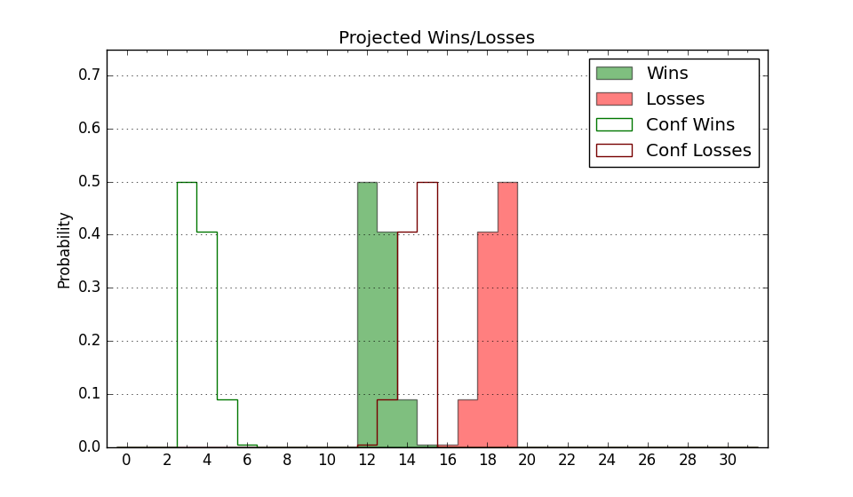

| Home | Game Probabilities | Conferences | Preseason Predictions | Odds Charts | NCAA Tournament |
| City: | Columbia, South Carolina | |
| Conference: | SEC (14th)
| |
| Record: | 3-12 (Conf) 12-16 (Overall) | |
| Ratings: | Comp.: 7.6 (102nd) Net: 7.6 (102nd) Off: 112.5 (118th) Def: 105.0 (104th) SoR: 0.0 (99th) |
| Remaining | ||||||
|---|---|---|---|---|---|---|
| Date | Opponent | Win Prob | Pred. | |||
| 2/28 | @ Georgia (32) | 10.4% | L 73-88 | |||
| 3/3 | Tennessee (20) | 19.3% | L 66-76 | |||
| 3/7 | @ Mississippi (91) | 30.5% | L 69-74 | |||
| Previous | Game Score | |||||
| Date | Opponent | Win Prob | Result | Off | Def | Net |
| 11/4 | North Carolina A&T (251) | 89.9% | W 91-72 | -1.2 | 0.7 | -0.5 |
| 11/9 | Southern Miss (236) | 88.4% | W 83-79 | -10.6 | -10.3 | -20.9 |
| 11/12 | Presbyterian (264) | 90.8% | W 81-61 | 9.4 | 3.1 | 12.5 |
| 11/18 | Radford (241) | 89.1% | W 87-58 | 3.4 | 15.6 | 19.1 |
| 11/21 | (N) Butler (64) | 34.1% | L 72-79 | -7.6 | 1.8 | -5.8 |
| 11/23 | (N) Northwestern (56) | 31.8% | L 77-79 | 13.4 | -9.6 | 3.8 |
| 11/28 | Charleston Southern (245) | 89.5% | W 74-62 | -11.7 | 9.4 | -2.3 |
| 12/2 | Virginia Tech (53) | 45.3% | L 83-86 | 2.4 | -0.3 | 2.2 |
| 12/6 | Stetson (322) | 95.6% | W 82-51 | 4.2 | 13.2 | 17.4 |
| 12/13 | The Citadel (351) | 97.7% | W 71-55 | -21.1 | 5.3 | -15.7 |
| 12/16 | @Clemson (40) | 12.5% | L 61-68 | -4.7 | 11.5 | 6.8 |
| 12/22 | South Carolina St. (359) | 98.6% | W 95-70 | 7.2 | -15.5 | -8.3 |
| 12/30 | Albany (329) | 95.9% | W 96-67 | 25.2 | -11.3 | 13.9 |
| 1/3 | Vanderbilt (16) | 16.6% | L 71-83 | 5.8 | -10.0 | -4.2 |
| 1/6 | @LSU (51) | 18.9% | W 78-68 | 21.5 | 16.2 | 37.7 |
| 1/10 | Georgia (32) | 28.4% | L 70-75 | -3.3 | 7.6 | 4.3 |
| 1/14 | @Arkansas (13) | 5.5% | L 74-108 | 2.2 | -19.9 | -17.6 |
| 1/17 | @Auburn (31) | 10.2% | L 67-71 | -7.2 | 24.0 | 16.9 |
| 1/20 | Oklahoma (58) | 47.2% | W 85-76 | 5.9 | 10.1 | 16.0 |
| 1/24 | @Texas A&M (43) | 14.7% | L 69-92 | -3.2 | -12.0 | -15.2 |
| 1/28 | Florida (6) | 10.3% | L 48-95 | -27.4 | -16.0 | -43.4 |
| 1/31 | LSU (51) | 44.3% | L 87-92 | 4.5 | -11.7 | -7.2 |
| 2/3 | @Texas (34) | 10.9% | L 75-84 | 4.1 | -1.1 | 3.1 |
| 2/7 | Missouri (54) | 45.6% | L 59-78 | -18.5 | -7.0 | -25.5 |
| 2/14 | @Alabama (18) | 6.0% | L 75-89 | -2.7 | 9.0 | 6.2 |
| 2/17 | @Florida (6) | 3.3% | L 62-76 | 1.5 | 10.3 | 11.8 |
| 2/21 | Mississippi St. (94) | 61.8% | W 97-89 | 27.9 | -15.5 | 12.4 |
| 2/24 | Kentucky (30) | 26.8% | L 63-72 | -16.4 | 13.2 | -3.2 |
| Stats & Trends | |||||
|---|---|---|---|---|---|
| Current | Day | Week | Month | Season | |
| Composite | 7.6 | +0.0 | +0.4 | -2.8 | -0.9 |
| Comp Rank | 102 | -1 | +6 | -14 | -22 |
| Net Efficiency | 7.6 | +0.0 | +0.4 | -2.9 | -- |
| Net Rank | 102 | -1 | +6 | -11 | -- |
| Off Efficiency | 112.5 | -0.1 | +0.3 | -1.5 | -- |
| Off Rank | 118 | -3 | -2 | -20 | -- |
| Def Efficiency | 105.0 | +0.1 | +0.2 | -1.4 | -- |
| Def Rank | 104 | -- | +1 | -10 | -- |
| SoS Rank | 78 | -1 | -4 | +36 | -- |
| Exp. Wins | 12.6 | +0.0 | +0.2 | -1.6 | -3.0 |
| Exp. Conf Wins | 3.6 | +0.0 | +0.2 | -1.6 | -1.0 |
| Conf Champ Prob | 0.0 | -- | -- | -- | -0.1 |

| Advanced Stats | ||
|---|---|---|
| Stat | Value | Rank |
| Off Eff FG % | 0.527 | 133 |
| Off Ast Ratio | 0.158 | 114 |
| Off ORB% | 0.273 | 260 |
| Off TO Rate | 0.129 | 62 |
| Off FT Ratio | 0.387 | 106 |
| Def Eff FG % | 0.482 | 63 |
| Def Ast Ratio | 0.153 | 224 |
| Def ORB% | 0.291 | 130 |
| Def TO Rate | 0.137 | 240 |
| Def FT Ratio | 0.313 | 92 |